Última corrida
Este ultimo GP de Singapura foi algo especial, com Max verstappen a vencer pela segunda vez consecutiva. Com o Pódio sendo concluído por Charles Leclerc e Kimi Antonelli.
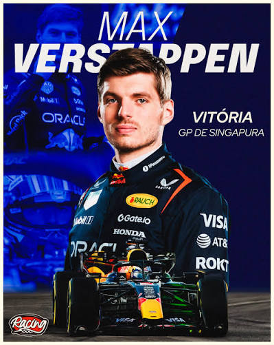
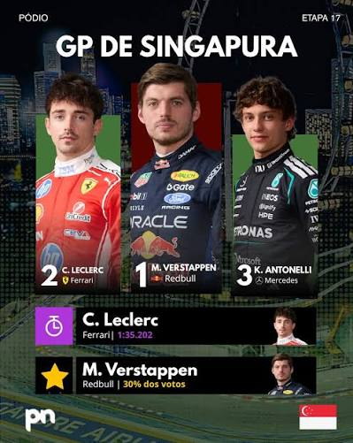
Este ultimo GP de Singapura foi algo especial, com Max verstappen a vencer pela segunda vez consecutiva. Com o Pódio sendo concluído por Charles Leclerc e Kimi Antonelli.


Quem conseguiu a pole position no GP de Singapura foi Max Verstappen, liderando a qualificação desde o Q1, com Leclerc em segundo e Hamilton em terceiro por margens minúsculas.


O próximo Grande Prémio será realizado em Austin, Estados Unidos. Corrida na qual Max Verstappen busca sua terceira vitória sendo vencedor aqui ano passado.GP que se realizará de 23 a 25 de outubro.
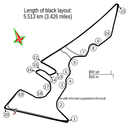
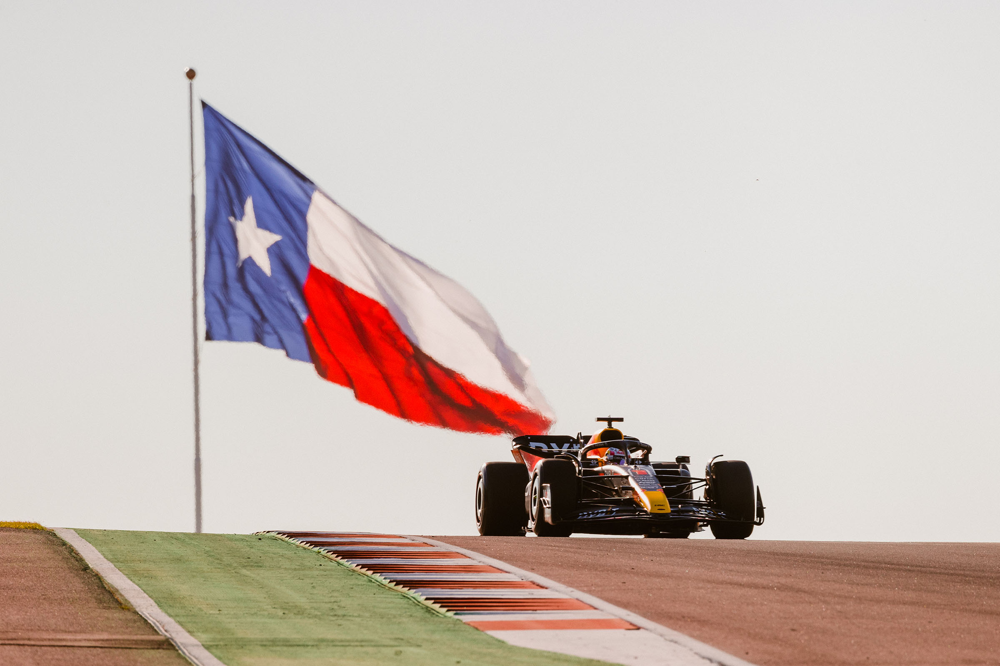
Equipa atualmente líder do campeonato por grande margem.Equipa composta pelo lider do campeonato Kimi Antonelli e George Russell.
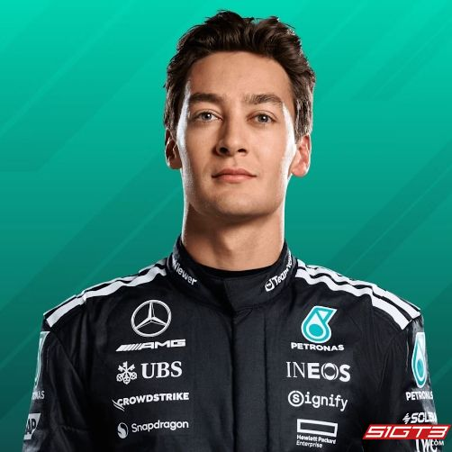
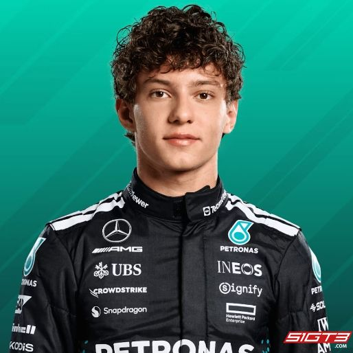
Equipa com uma história rica no F1, composta por Lewis Hamilton e Charles Leclerc.
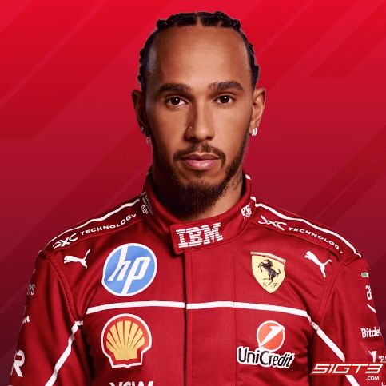
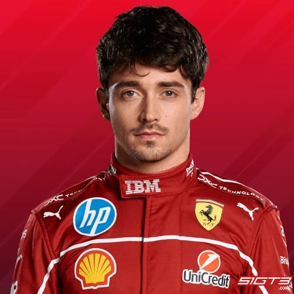
Equipa campeã mundial no ano passado, composta pelo atual campeão mundial Lando Norris e Oscar Piastri.
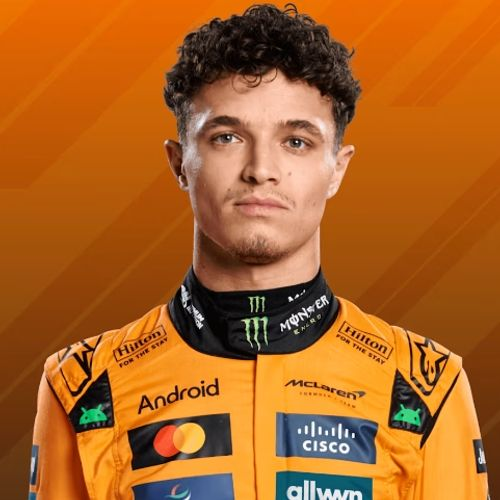
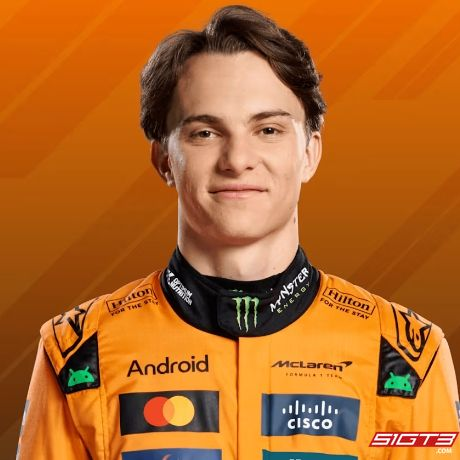
Equipa com um histórico de sucesso no F1, ultimamente em pior fase, composta por 4 vezes campeão mundial Max Verstappen e Isack Hadjar.
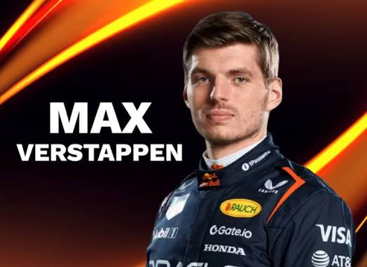
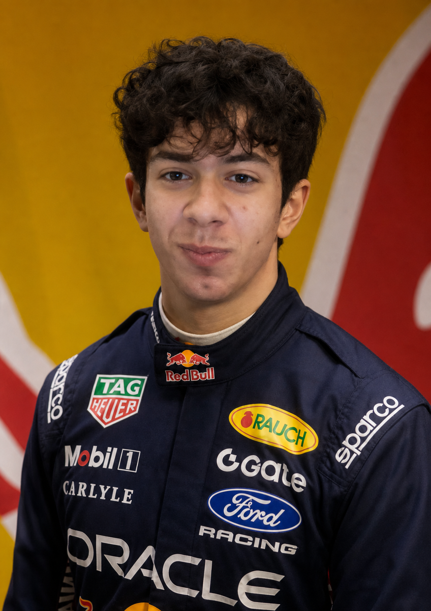
Equipa secundária da red bull racing, constituida por Liam Lawson e Arvid Lindblad.
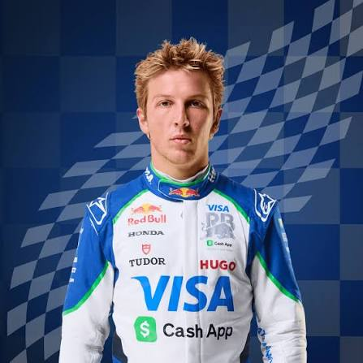
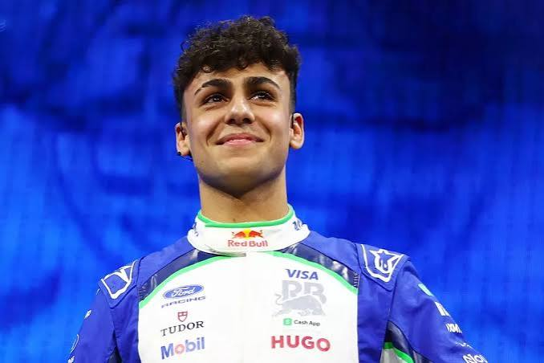
Unica equipa francesa na F1, composta por Pierre Gasly e Franco Colapinto.
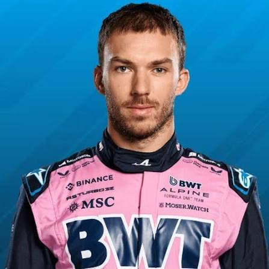
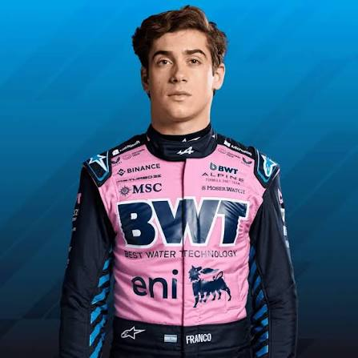
Equipa americana na F1, composta por Esteban Ocon e Oliver Bearman.
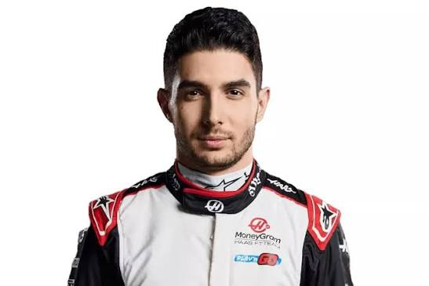
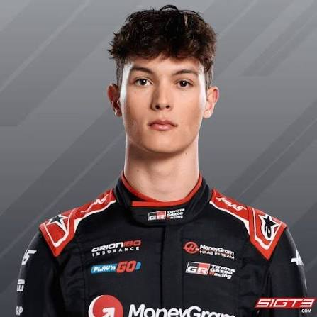
Equipa novata na fórmula 1, composta por Nico Hülkenberg e Gabriel Bortoleto.
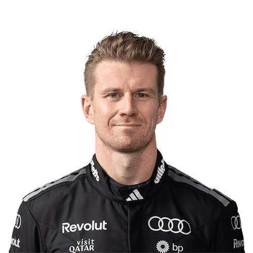
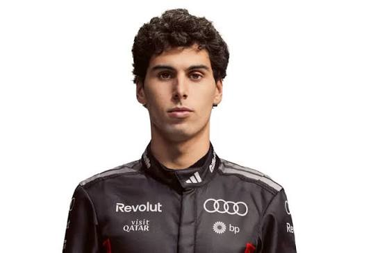
Equipa com uma história rica em lendas, como Ayrton Senna, composta por Carlos Sainz e Alexander Albon.
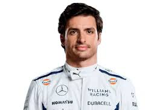
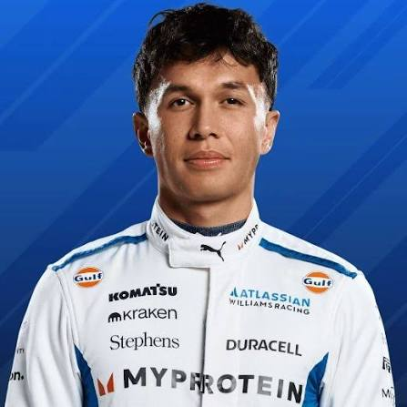
Equipa de meio de tabela, com 2 vezes campeão mundial e experiente piloto Fernando Alonso, e o filho do dono da equipa Lance Stroll.
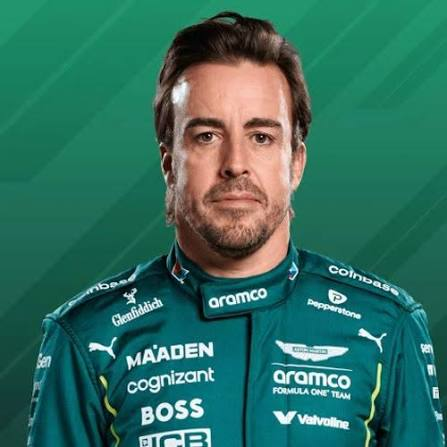
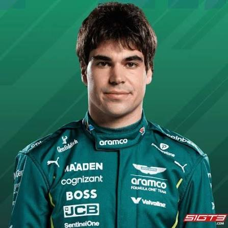
Equipa nova na F1, composta por Sérgio Pérez e Valtteri Bottas.
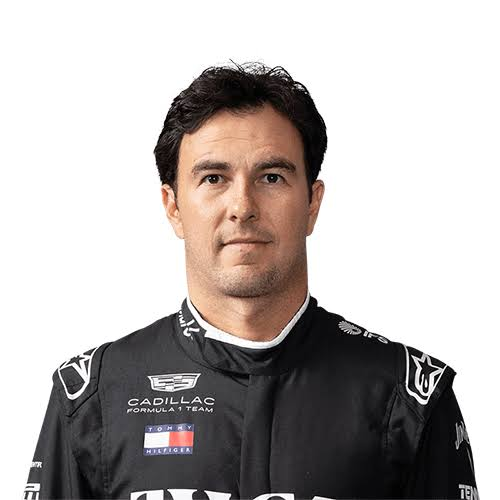
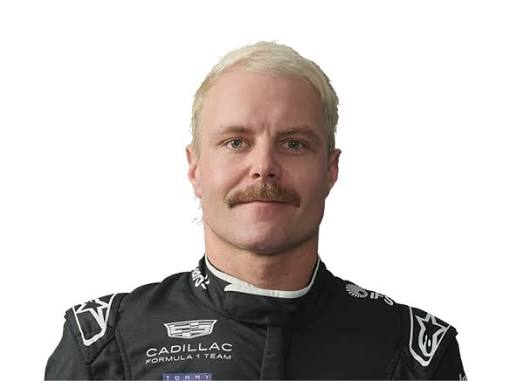
Kimi Antonelli tem feito uma temporada histórica, estando muito bem encaminhado para quebrar o recorde de campeão mundial mais novo por mais de 3 anos! vencendo, por agora, 8 corridas na temporada, incluindo um stint de 5 vitórias consecutivas, atualmente liderando o campeonato por 102 pontos.
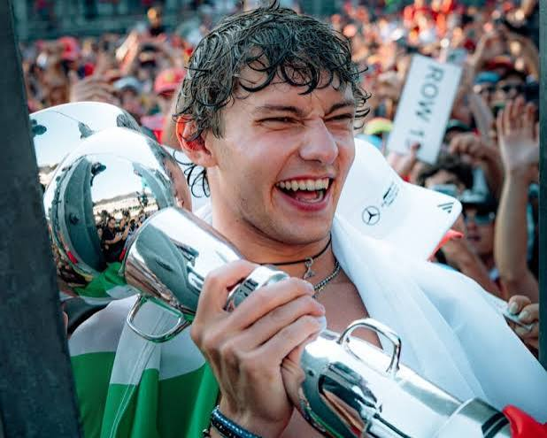
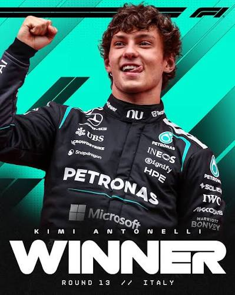
O Autódromo Hermanos Rodríguez, situado na Cidade do México, é um dos circuitos mais icónicos e desafiantes do calendário da Fórmula 1. Inaugurado originalmente em 1959, a pista foi batizada em homenagem aos lendários irmãos pilotos Ricardo e Pedro Rodríguez.
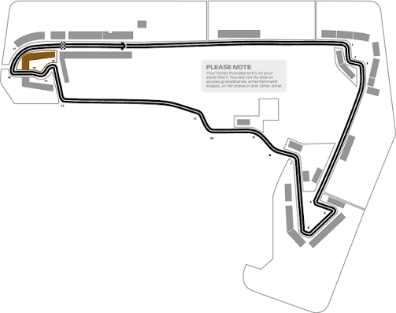
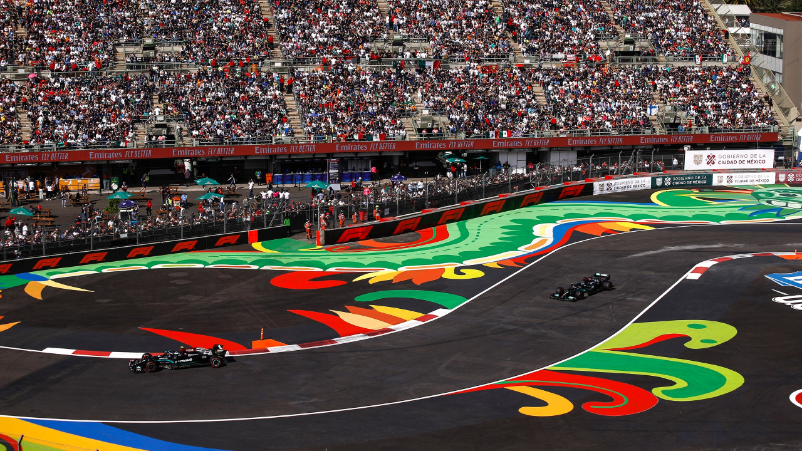
O Autódromo José Carlos Pace, popularmente conhecido como Interlagos, fica localizado na Zona Sul de São Paulo e é um dos templos históricos do automobilismo mundial. Inaugurado em 1940, o nome "Interlagos" deve-se ao facto de a pista ter sido construída numa região entre dois grandes lagos artificiais. Em 1985, o circuito foi oficialmente rebatizado em homenagem ao falecido piloto brasileiro José Carlos Pace.
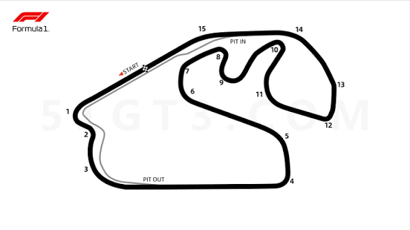
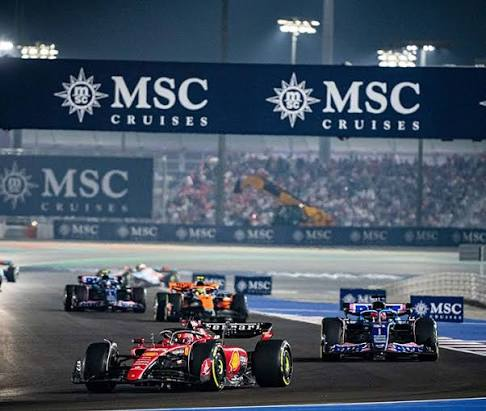
O Circuito de Rua de Las Vegas é uma das adições mais recentes e espetaculares ao calendário da Fórmula 1. Localizado no coração do estado do Nevada, nos Estados Unidos, este traçado urbano destaca-se por integrar a famosa avenida The Strip, permitindo que os carros passem a alta velocidade junto aos casinos e hotéis mais emblemáticos do mundo.
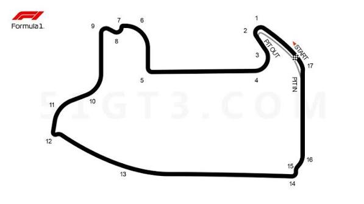
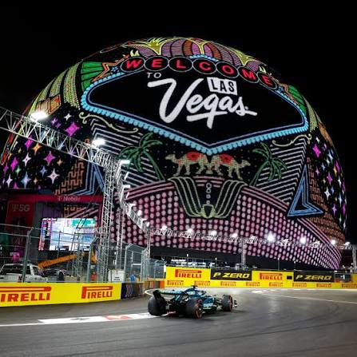
O Circuito Internacional de Lusail, situado nos arredores da cidade planeada de Lusail e a norte de Doha, é um traçado moderno que se estreou na Fórmula 1 em 2021. Construído originalmente em 2004 em tempo recorde para o campeonato de MotoGP, o circuito foi posteriormente adaptado e totalmente renovado para receber em permanência os monolugares da F1.
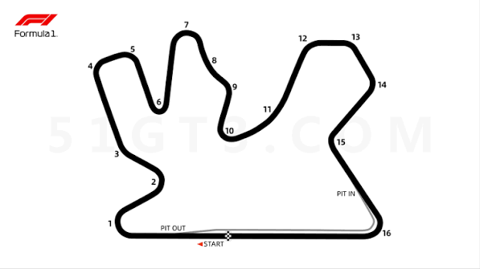
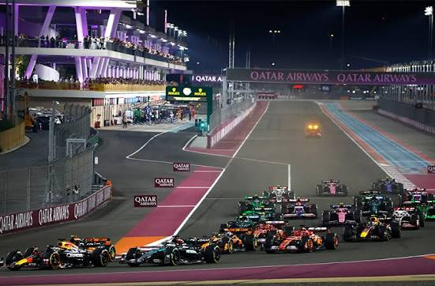
O Circuito de Yas Marina, localizado na Ilha de Yas, em Abu Dhabi (Emirados Árabes Unidos), é amplamente conhecido por albergar a corrida de encerramento da temporada de Fórmula 1. Inaugurado em 2009 com um custo de construção multimilionário, o traçado foi desenhado pelo arquiteto Hermann Tilke e destaca-se como uma das obras de engenharia desportiva mais luxuosas e avançadas do mundo.
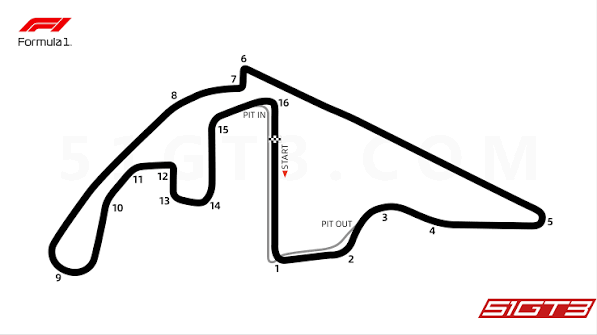
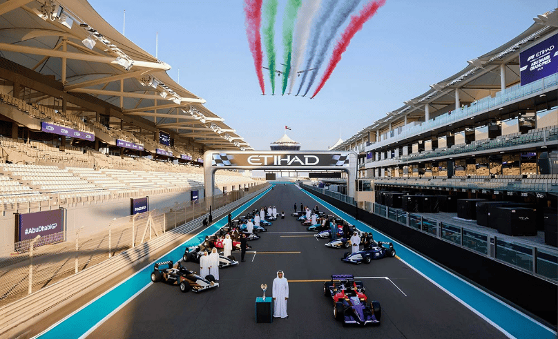